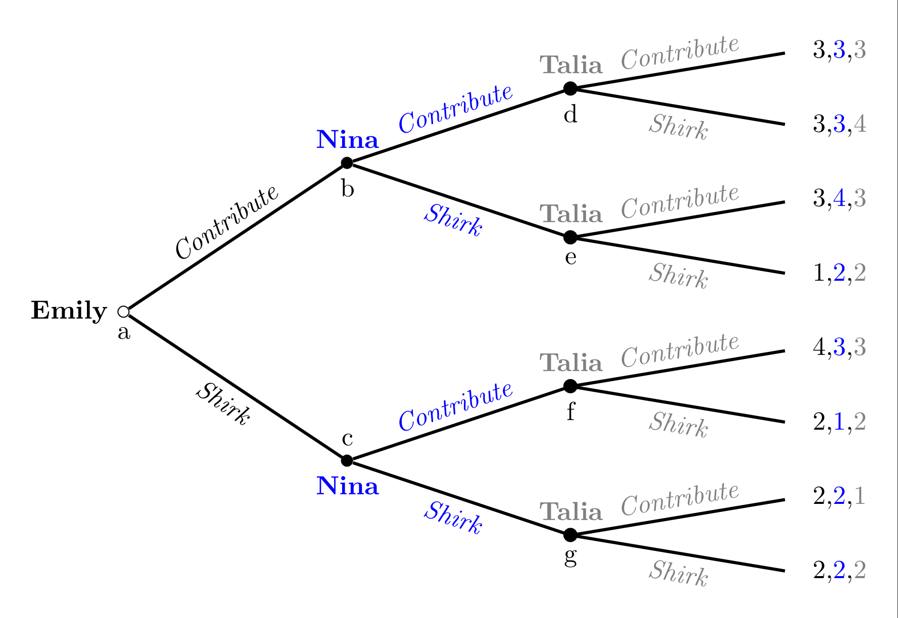

Introduction to Game Theory
Sequential Games
2024
Outline
Game trees
Backwards Induction
Efficiency
Extensive Form
Game Trees/Extensive Form as a tool
Before we learn how to solve a game, it will helpful to be able to visualize them
Because of the ordered nature of sequential games, a tree diagram makes sense
A Decision Tree

Extensive Form Definition
A Tree Graph consists of:
Multiple nodes with an ordered hierarchy starting from one initial node
Branches coming from each node which connect it to later nodes
The tree ends in any of the multiple terminal nodes
Warning
Each (non-initial) terminal node may have multiple branches leading from it; but must only have one branch that leads to it.
Anatomy of a tree

Anatomy of a tree
Anatomy of a tree
Kidnapping Game 1
A kidnapper named Guy has contacted the victim’s wife, named Vivica, to demand a ransom.
To predict what will happen to the victim, Orlando, we need to create a game theoretic model of the situation.
Let’s use the language of the tree graph to visualize this game.
Kidnapping Game
Who are the players?
Where are the decisions?
What are the branches? What do they represent?
What do the terminal nodes represent?
Is this a complete representation of a game? What’s missing?
Kidnapping Game payoffs
| Outcome | Guy |
|---|---|
| No kidnapping | 3 |
| Kidnapping, ransom paid, Orlando killed | 4 |
| Kidnapping, ransom paid, Orlando released | 5 |
| Kidnapping, no ransom paid, Orlando killed | 2 |
| Kidnapping, no ransom paid, Orlando released | 1 |
Kidnapping Game payoffs
| Outcome | Guy | Vivica |
|---|---|---|
| No kidnapping | 3 | 5 |
| Kidnapping, ransom paid, Orlando killed | 4 | 1 |
| Kidnapping, ransom paid, Orlando released | 5 | 3 |
| Kidnapping, no ransom paid, Orlando killed | 2 | 2 |
| Kidnapping, no ransom paid, Orlando released | 1 | 4 |
Kidnapping game tree with payoffs

Predictions?
Based on the extensive form game tree with payoffs,
- Do you have any predictions for what strategies each player will choose?
a Definition of an Extensive Form Game: 1
A collection of decision-makers, called players or agents
A set of decision nodes, each represents the information available to the player of that node
Strategies for each player which list the branches from each node that represetn the actions a player would take if faced with that choice
A tree diagram which maps the intersections of players’ strategy profiles to the outcomes represented at each terminal nodes
Strategies in Extensive Form Games
Definition
A strategy is a complete plan of action which assigns an action at every node where a player makes a decision
Warning
Be careful to distinguish between a strategy and a single action/choice
What’s the difference?
Apply this definition to the kidnapping game:
- How many decisions does Guy make?
- 3
- How many decisions does Vivica make?
- 1
Apply this definition to the kidnapping game:
- Write out a complete strategy for Vivica
- Only two strategies:
- Pay the ransom,
- or Don’t pay
- Only two strategies:
Apply this definition to the kidnapping game:
- Write out at complete strategy for Guy
- Let’s give some shorter names for Guy’s actions:
- \(A\) \(\equiv\) Kidnap Orlando (Abduct)
- \(I\) \(\equiv\) Don’t kidnap Orlando (Ignore)
- \(K\) \(\equiv\) Kill Orlando
- \(L\) \(\equiv\) Let Orlando live
- Let’s give some shorter names for Guy’s actions:
Apply this definition to the kidnapping game:
Guy has \(8\) total complete strategies:
| If Guy \(A\)bducts | If Guy \(I\)gnores |
|---|---|
| ( \(A\), \(K\), \(K\) ) | ( \(I\), \(K\), \(K\) ) |
| ( \(A\), \(L\), \(K\) ) | ( \(I\), \(L\), \(L\) ) |
| ( \(A\), \(K\), \(L\) ) | ( \(I\), \(K\), \(L\) ) |
| ( \(A\), \(L\), \(L\) ) | ( \(I\), \(L\), \(L\) ) |
Backwards Induction
Solving Sequential Games
Now that we have defined all the parts of what a sequential game is we can start to solve them.
- A solution in our case will be a prediction of what rational agents would do in a sequential game
The smoking decision
Do I want to try smoking today?
Suppose today I can either Try smoking for the first time, or Not try
If I choose Try today, then I will have another choice in the future:
Continue smoking, or Quit
The smoking decision
Let’s create some preferences over the three different outcomes:
\(U(\text{Not}) = 0\) - I’m no worse off, but don’t get to experience what it’s like
\(U(\text{Try}\rightarrow\textbf{Quit}) = 1\) - I get the experience of smoking without long-term health consequences, etc.
\(U(\text{Try}\rightarrow\textbf{Continue}) = -1\) - I become an addict
The smoking decision
Let’s model this as a decision tree
The smoking decision
What would a rational version of myself choose?
Is this realistic?
Why might Trying and then Quitting be a bad idea?
The smoking game
We can apply the tools of game theory to this decision:
Let’s add future Dante as another player who acts at the second decision node
Future Dante is different from Present Dante because he has different preferences:
\(U_{FD}(\text{Continue}) = 1\) because he’s already addicted
\(U_{FD}(\text{Quit}) = -1\) because withdrawl is painful
The smoking game
The smoking game
What will Future Carmen choose?
Should Carmen choose to Try smoking if she knows what her future self would choose?
‘Pruning’ branches
If Carmen is forward looking, knows her future self’s preferences, and knows that her future self is rational,
Then she can eliminate the possibility that her future self would quit.
- Pruning is this type of logic applied to eliminating certain branches in a game tree.
‘Pruning’ branches
If Future Carmen will never choose to Quit smoking once she is already an addict,
what choices is Today’s Carmen left with?
Try knowing that she will continue in the future and get -1 payoff
or Not try smoking today and earn 0 payoff
Backwards Induction (intuitively)
Let’s outline the logical steps we used to solve this game:
We were uncertain about what would happen in this game, because Today’s Carmen’s optimal strategy depended on what Future Carmen woud do
But Future Carmen is the last player in this game, so her choice only depends on her own preferences
Knowing what Future Carmen would choose allowed us to find Today’s Carmen’s best strategy
Smoking Game Solution

figures/fig3.5.png
Backwards Induction defined
The method of looking at decisions in the future to decide what to do now is called Backwards Induction or Rollback
Definition 1
… using rollback requires starting to think about what will happen at all the terminal nodes and literally “rolling back” through the tree to the initial node…
Backwards Induction defined
The method of looking at decisions in the future to decide what to do now is called Backwards Induction or Rollback
Definition 1
When all players do rollback analysis to choose their optimal strategies, we call this set of strategies the rollback equilibrium2 of the game; the outcome that arises from playing these strategies is the rollback equilibrium outcome
Solving the Kidnapping Game
Kidnapping Game Solution
The Rollback Equilibrium is:
- { (Kidnap, Release, Kill), (Pay) }
You should read this as:
Guy Kidnaps and will Release if Vivica Pays, but will Kill if Vivica Doesn’t Pay
Vivica Pays the ransom
Adding more players
3-player planting game
Emily, Nina, and Talia are roommates who want to get a start on their communal garden.
They like to enjoy the benefits of fresh produce and green space, but it is costly for them to put the work in.
2 or 3 people working is enough to keep the garden healthy, but if 1 or 0 work, then the garden will die.
Planting Game payoffs
| outcome: | utlity: |
|---|---|
| I don’t contribute, but garden lives | 4 |
| I contribute, and get garden. | 3 |
| I don’t contribute, and garden dies | 2 |
| I contribute, but garden dies | 1 |
Planting Game Tree
Rollback in the Planting Game
Who should we start with to solve this game?
- Talia, because she is the last one to move, her choices don’t depend on other players
Rollback in the Planting Game
How many strategies does Talia have?
16 total complete strategies
CCCC, CCCD, CCDC, CCDD, CDCC, CDCD, CDDC, CDDD, DCCC, DCCD, DCDC, DCDD, DDCC, DDCD, DDDC, DDDD
Rollback in the Planting Game
Which of Talia’s strategies can be eliminated as irrational?
- Any which include an action which would lead to a lower payoff than another possible action at the same node
Rollback in the Planting Game
Let’s simplify the game by pruning Talia’s eliminated branches
Rollback in the Planting Game

Equilibrium Path of Play
Note that there is one continuous path we traced from the initial node to a final equilibrium outcome.
However, we couldn’t have gotten their without the other arrows paths even though they are never reached in equilibrium.
Recall that a strategy is a collection of choices at every decision node.
Equilibrium Strategies
Even though the players available actions are all called the same (Contribute or Don’t), this tree provides labels of each decision node so we can say something like:
“Nina’s strategy in the rollback equilibrium is { Don’t Contribute at b, Contribute at c }”.
- To make it even shorter, let’s call this strategy DC.
Rollback Equilibrium Strategies
The equilibrium is:
- { D1, DC2, DCCD3 }
Three new concepts
A list of available strategies for each player 1
An optimal strategy for each player
- A complete plan of action states a player’s best choice at each node where she could make a decision 2
The path of play in rollback equilibrium which combines optimal strategies for all players
Welfare and Efficiency
What are the good outcomes in the planting game?
Can we rank outcomes by collective welfare?
Pareto Dominance
Pareto optimality (or efficiency) is econonomists’ best shot at coming up with a ranking of which outcomes are objectively ‘better’
For any two outcomes (🎉, 🎊), 🎉 is Pareto dominated by 🎊 if both:
No one strictly prefers 🎉 to 🎊 - U👤(🎊) \(\geq\) U👤(🎉) \(\forall 👤 \in \{ 🙍, 🧑, 💆, 🧖, 🧑, 😺, ...\}\)
At least one person strictly🎉 prefers 🎉 to 🎊 - \(\exists 👤\) such that U👤(🎊) \(>\) U👤(🎉)
Pareto Improvement
The move from a policy y to an alternative policy x is a Pareto improvement if x Pareto dominates y.
Such a policy change should reasonably be seen as unambiguously good
Another perspective is that no-one would veto a pareto improvement
Pareto Efficiency
An outcome is Pareto Efficient (Optimal) if no other outcome Pareto dominates it.
An outcome is Pareto Infficient if at least one other outcome Pareto dominates it.
Ranking the Planting Payoffs
Compare (4,3,3) to (1,2,2)
- Which one is Pareto dominating?
Ranking the Planting Payoffs
Now compare (4,3,3) to (3,4,3) or (3,3,4)
- Which one is Pareto dominating?
Is the rollback equilibrium outcome a Pareto efficient one?
Discussion: Efficiency vs other social comparisons
How useful is Pareto Efficiency in the real world?
How else could we group outcomes?
We might address this later in the class with what is known as Cooperative Game Theory
Order Advantages
Order Advantages
Who came out ahead in the Planting Game?
- Why?
First-mover advantage
Emily received her best outcome of 4 because she can take advantage of acting first.
When a game favors those who act first, we say there is a first-mover advantage
But it’s not always helpful to act first!
Second-mover advantage
Sometimes you want to see the actions of others before you know your best response
When a game favors those who decide after another player, there is a second-mover advantage
For example, Squid Game bridge game
Adding More Moves
Even a simple game get complicated fast]

Tic-Tac-Toe
Even though it looks complicated, the main branches are really just copies of each other
Most people probably figure out the rollback equilibrium after playing it enough
Insert relevant xkcd here: https://xkcd.com/832/
Chess
What about more complicated games like chess?
- technically rollback solvable, but with \(10^{120}\) possible moves, it hasn’t been solved by either human or machine
Players of complicated sequential games often implement some intermediate valuation function to assign payoffs to non-terminal nodes.

EC327 | Lecture 2 | Sequential Games